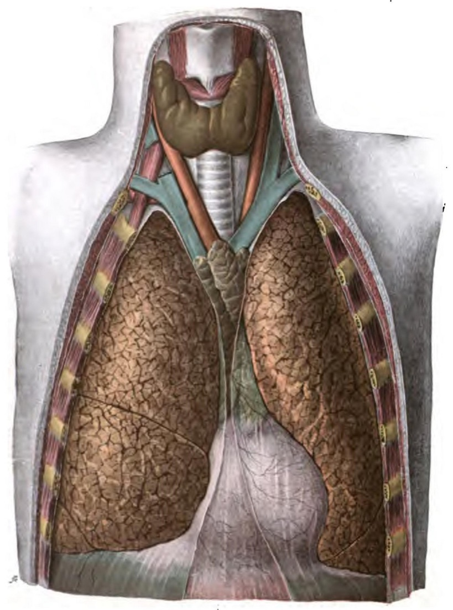
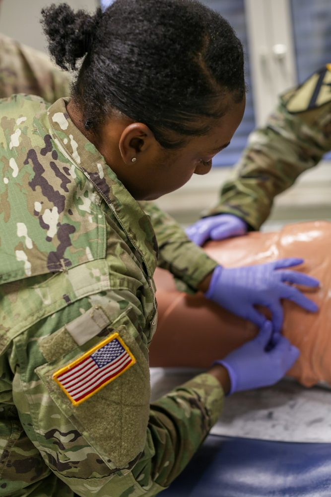
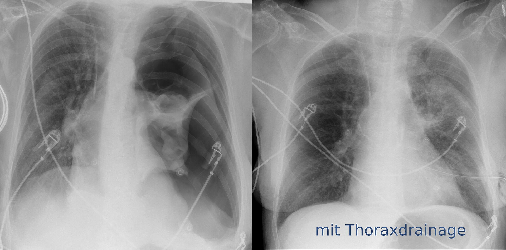

חזה אוויר (Pneumothorax)
הפלאורה, חזה אוויר ספונטני וחבלתי, חזה אוויר בלחץ, נקז חזה. ובקצרה: תפליט ואמפיאמה
בסוף המפגש תדעו
- לתאר את הפלאורה ואת המרווח הפלאורלי. להבין למה מכניסים נקז מעל הצלע
- לסווג חזה אוויר: ספונטני ראשוני ומשני, חבלתי ויאטרוגני
- לזהות חזה אוויר בלחץ לפי הקליניקה בלבד ולדעת איפה מנקזים במחט ובאצבע
- לבחור בין מעקב, שאיבה, נקז וניתוח בחזה אוויר ספונטני
- להבחין בין טרנסודט לאקסודט ולהכיר את שלבי האמפיאמה והטיפול בה
הפלאורה והמרווח הפלאורלי

👆 לחצו על מספר בציור כדי לקרוא עליו
הפלאורה הפריאטלית מצפה את דופן החזה, את המדיאסטינום ואת הסרעפת. היא מעוצבבת בעושר מעצבי הצלעות. לכן נותנים הרדמה מקומית נדיבה לפני נקז. הצרור (וריד, עורק ועצב) עובר לאורך השפה התחתונה של כל צלע מלפנים: נכנסים מעל הצלע.
הפלאורה הוויסצרלית עוטפת את הריאה ומפרידה בין האונות. היא מעוצבבת מהוואגוס ומהמערכת הסימפתטית. בין שתי הפלאורות יש רק מעט נוזל, שמאפשר לריאה לגלוש כמעט בלי חיכוך. אוויר, נוזל, גידול או זיהום במרווח הזה לוחצים על הריאה.
כאן נמצאות הבועות הקטנות מתחת לפלאורה (blebs). כשהן נקרעות נוצר חזה אוויר ספונטני ראשוני. בניתוח (VATS) כורתים אותן. חזה אוויר קטן נמדד כאן: עד 3 ס״מ בקודקוד.
כאן מתקבץ נוזל. בצילום בעמידה רואים תפליט מ-300 מ״ל, כקהות של הזווית. מתחת לסרעפת: הכבד והטחול. לכן נקז נכנס במרווח החמישי. חתך גבוה יותר מקטין את הסיכון להיכנס לבטן.
בחזה אוויר בלחץ המדיאסטינום נדחק לצד השני וההחזר הוורידי ללב יורד: תת לחץ דם. אתרי הניקוז במחט (המרווח החמישי בקו בית השחי, או המרווח השני בקו אמצע הבריח) נבחרו כדי להתרחק מהלב ומהכלים הגדולים.
מה זה חזה אוויר ומאיפה הוא בא?
- חזה אוויר: אוויר שהצטבר במרווח הפלאורלי. הריאה קורסת לכיוון ההילוס
- ספונטני ראשוני: בלי מחלת ריאה ידועה. בועות קטנות (blebs) מתחת לפלאורה בקודקוד הריאה נקרעות. גבר צעיר, גבוה ורזה. עישון מעלה את הסיכון
- ספונטני משני: על רקע מחלת ריאה: COPD ובולות, סיסטיק פיברוזיס, Pneumocystis, פיברוזיס ריאתי. גם קטמניאלי (בקשר למחזור)
- חבלתי: חודר או קהה
- יאטרוגני: הנשמה במכונה, ניקור פלאורלי, ביופסיה בריאה, הכנסת קו מרכזי, אחרי ניתוח

הסיפור, הבדיקה וההדמיה
קליניקה ובדיקה
- כאב בחזה וקוצר נשימה שהופיעו פתאום
- בהאזנה: אין קולות נשימה או שהם מוחלשים בצד הפגוע
- במישוש: אמפיזמה תת-עורית (קרפיטציות מתחת לעור)
- בחבלה: תנועה לא סימטרית של בית החזה, פצע שמתקשר לפלאורה (חזה אוויר פתוח)
- קולות נשימה מוחלשים יכולים להיות גם המוטורקס, קונטוזיה, חסימה של הסימפון או צינור שנכנס עמוק לסימפון הימני
הדמיה

חזה אוויר בלחץ
- האוויר נכנס לפלאורה ולא יוצא. המדיאסטינום נדחק לצד השני, ההחזר הוורידי והאוורור יורדים. קריסה ומוות
- אבחנה קלינית. לא מחכים לצילום: צילום לפני הטיפול אסור
הסימנים
- קולות נשימה חסרים או מוחלשים בצד הפגוע
- תת לחץ דם (ההחזר הוורידי ללב יורד)
- לחצי הנשמה גבוהים במונשם
- ורידי צוואר גדושים (קשה לראות), אמפיזמה תת-עורית
- סטייה של הקנה לצד השני, לרוב עדינה ונמששת בגומה העליונה של עצם החזה

מעקב, שאיבה, נקז או ניתוח?
תורקוסטומיה: העקרונות
- מה הנקז עושה: מנקז אוויר ודם, מוריד לחץ ומאפשר לריאה להתפשט. בחבלה זה הטיפול הראשון ברוב פגיעות החזה
- איפה: מרווח בין-צלעי חמישי, בין קו בית השחי הקדמי לאמצעי. חתך גבוה יותר מקטין את הסיכון להיכנס לבטן ולכבד או לטחול
- מעל הצלע: הצרור (וריד, עורק ועצב) עובר לאורך השפה התחתונה של כל צלע מלפנים
- הרדמה מקומית נדיבה: הפלאורה הפריאטלית מעוצבבת בעושר מעצבי הצלעות. הוויסצרלית לא כואבת
- גודל: כבר לא נחשב קריטי. נקזים של 12–20 Fr יעילים. במטופל במצב קיצוני: טכניקה פתוחה, כי הזמן חשוב
טרנסודט או אקסודט?
- בצילום בעמידה רואים תפליט מ-300 מ״ל: קהות של הזווית הקוסטופרנית
- טרנסודט (מעט חלבון, לחץ הידרוסטטי או אונקוטי): אי ספיקת לב, שחמת, תסמונת נפרוטית, היפואלבומינמיה
- אקסודט (עשיר בחלבון, דלקת מקומית): זיהום, ממאירות, שחפת, מחלות קולגן, לבלב, פרפורציה של הוושט
- תפליט ממאיר: כ-15% מחולי הסרטן. חציון הישרדות 5 חודשים. טיפול פליאטיבי: ניקוז, צנתר פלאורלי קבוע או פלאורודזיס
- תפליט בלי תסמינים לרוב לא מנקזים. מטפלים בסיבה
אמפיאמה: מוגלה בפלאורה
- מאיפה: לרוב תפליט תגובתי לדלקת ריאות. גם חבלה, ניתוח, פרפורציה של הוושט
- חיידקים: גראם שליליים, אנאירובים, סטרפטוקוקים ופנאומוקוק. לחשוב על שחפת
- תסמינים: חום, חולשה, ירידה בתיאבון ובמשקל. בירור: צילום חזה ו-CT
מחקרים והנחיות שכדאי להכיר
24 המלצות לחזה אוויר ספונטני. בחזה אוויר ראשוני: טיפול שמרני במטופל יציב עם מעט תסמינים. שאיבה במחט עדיפה על נקז כטיפול ראשון (המלצה חזקה). אפשר טיפול אמבולטורי. ניתוח מוקדם למי שמעדיף למנוע חזרה
Walker S et al. Eur J Cardiothorac Surg 2024;65:ezae18951 מחקרים. לפי מדידות הדמיה (24 מחקרים, 8,046 מטופלים) המחט לא הגיעה לפלאורה ב-32.8%. כל ס״מ של אורך הוריד את הכישלון ב-7.8%. דופן החזה דקה יותר במרווח החמישי מאשר בשני. המחברים מציעים מחט של 7 ס״מ
Ahmad SJS et al. World J Emerg Surg 2025;20:3972 מטופלים עם חזה אוויר חבלתי ונקז. התחלה בחותם מים (בלי יניקה) קיצרה את משך הנקז (41 לעומת 51 שעות) בלי יותר סיבוכים. מחקר ממרכז אחד, דרוש אישור במחקר גדול
Yeates EO et al. J Am Coll Surg 2026 (online ahead of print), PMID 42678774חמישה דברים לקחת למחלקה
- חזה אוויר ספונטני ראשוני: גבר צעיר, גבוה ורזה, לרוב מעשן. כאב פתאומי וקוצר נשימה
- חזה אוויר בלחץ הוא אבחנה קלינית: תת לחץ דם וקולות נשימה חסרים. מנקזים לפני צילום
- ניקוז במחט או באצבע במרווח החמישי בקו בית השחי, או במרווח השני בקו אמצע הבריח. אחר כך נקז
- נקז נכנס מעל הצלע, עם הרדמה מקומית נדיבה. חזה אוויר קטן ויציב אפשר לעקוב
- תפליט: Light מבדיל בין טרנסודט לאקסודט. אמפיאמה: ניקוז ואנטיביוטיקה. בשלב מתקדם: ניתוח